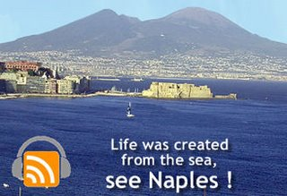

In this podcast I interview Gaetano Gambardella of Napoli Mare, a new project that mixes cultural initiatives, events and itineraries linked to the theme of the sea. The goal is to introduce tourists to the spectacular beauty, cultural and gastronomic traditions of the Bay of Naples.